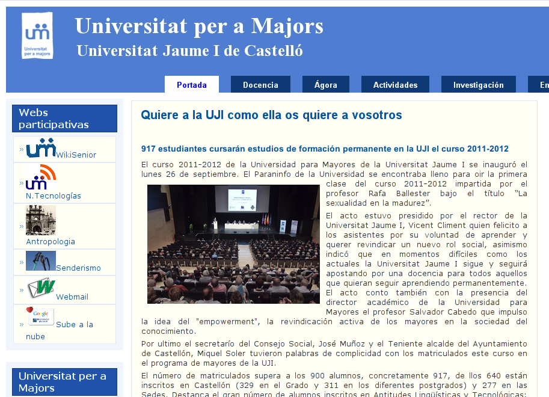
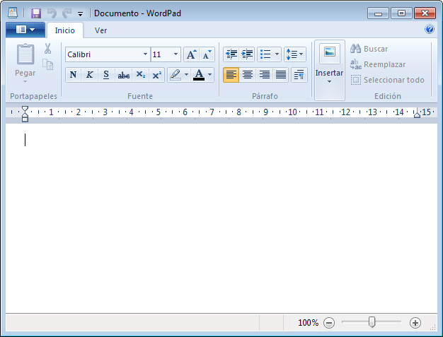
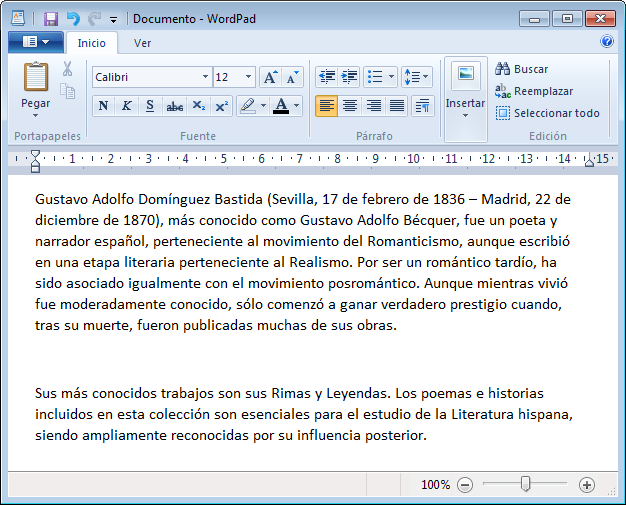
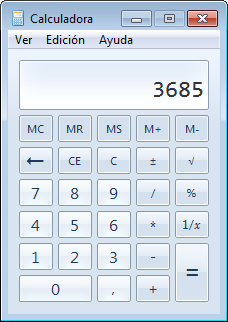
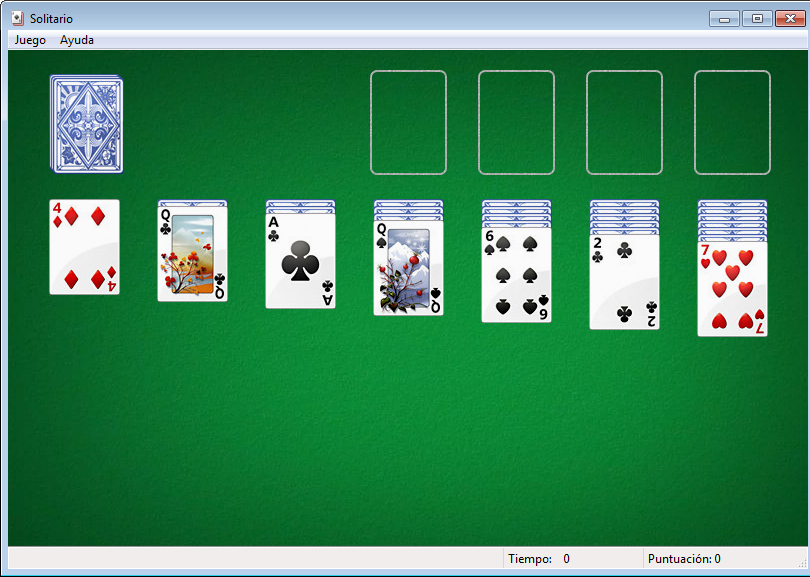

Sesión 16: Repaso de la primera parte del curso.
Vamos a hacer una pequeña práctica donde repasaremos los principales conceptos de manejo de un ordenador que vimos en la primera parte del curso.
1. Firmar la asistencia a la clase
Vamos a firmar la asistencia a clase. Sigue estos pasos:
- Abre un navegador web.
- Accede a la página http://mayores.uji.es.
- Ves a la sección "Docencia", y en esa página busca el enlace a "Gestión de firmas" que encontraras en la parte inferior de la columna lateral izquierda.
- Verás que te solicita tu usuario/contraseña de la UJI, ya que firmar la asistencia es una acción específica de cada uno de nosotros/as.
- Si finalmente has conseguido llegar hasta aquí, apreta el botón de "Firmar asistencia".
2. Abrir el Paint, maximinar, minimizar, redimensionar, cerrar.
Vamos a abrir la aplicación Paint, me gustaría que intentarais realizar un dibujo y probar acciones como el maximizar, minimizar, redimensionar, o cerrar la aplicacion:
- Abre Paint utilizando el Menú Inicio.
- Haz un dibujo, por ejemplo una flor.
- Minimiza y vuelve a restaurar.
- Maximiza y restaura.
- Redimensiona y mueve la ventana de Paint.
- Finalmente cierra la aplicación. ¿Qué mensaje te aparece?
3. Abrir el Wordpad.
Repasemos la apertura y uso del programa WordPad.
- Abre Wordpad utilizando el Menú Inicio.
- Lo encontrarás en: Inicio>Todos los programas>Aplicaciones>Wordpad
4. Introducir texto con la utilidad de copiar/pegar
Vamos a practicar el concepto de copiar/pegar trasladando el texto que os propongo al documento de Wordpad.
Gustavo Adolfo Domínguez Bastida (Sevilla, 17 de febrero de 1836 – Madrid, 22 de diciembre de 1870), más conocido como Gustavo Adolfo Bécquer, fue un poeta y narrador español, perteneciente al movimiento del Romanticismo, aunque escribió en una etapa literaria perteneciente al Realismo. Por ser un romántico tardío, ha sido asociado igualmente con el movimiento posromántico. Aunque mientras vivió fue moderadamente conocido, sólo comenzó a ganar verdadero prestigio cuando, tras su muerte, fueron publicadas muchas de sus obras.
Sus más conocidos trabajos son sus Rimas y Leyendas. Los poemas e historias incluidos en esta colección son esenciales para el estudio de la Literatura hispana, siendo ampliamente reconocidas por su influencia posterior.

¿Sabrías ahora ponerle un título al documento? Por ejemplo: "Gustavo Adolfo Becquer", con un tamaño de fuente de 32px, centrado y subrayado.
4. Trabajar con la calculadora
Ves a la calculadora y haz el siguiente cálculo: 3685 multiplicado (*) 999 = ¿¿¿????
6. Solitario
Como habéis trabado muy bien, ahora podéis jugar un poco al juego del solitario. :)
